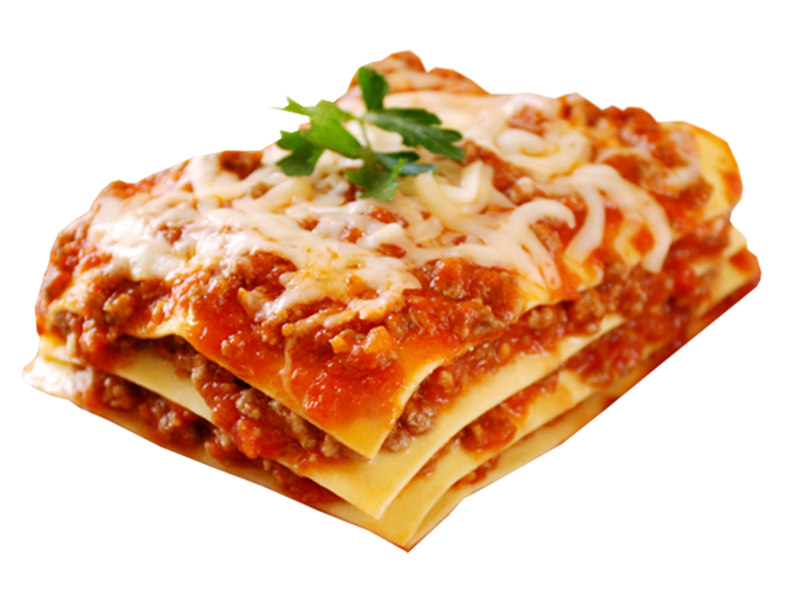

Lasagna
Navigation
🏡 Home
Bigos
Pierogi

A perfect lasagna always pairs good with fresh herbs. That's why it's
important to always have some at hand or in your garden.
Ingredients:
-
Meat: This super meaty lasagna has sweet Italian
sausage and lean ground beef
-
Onion and garlic: An onion and two cloves of garlic
are cooked with the meat to add tons of flavor
-
Tomato products You'll need a can of crushed
tomatoes, two cans of tomato sauce, and two cans of tomato paste
-
Sugar: Two tablespoons of white sugar add subtle
sweetness and enhance the flavor of the sauce
-
Spices and seasonings: This lasagna recipe is
flavored with fresh parsley, dried basil leaves, salt, Italian
seasoning, fennel seeds, and black pepper
-
Lasagna noodles: Use store-bought or homemade if
you are able to make some
-
Cheeses: Parmesan, mozzarella, and ricotta cheese
make this lasagna extra decadent
-
Egg: An egg helps bind the ricotta so it doesn't
ooze out of the lasagna when you cut into it
Preparation:
- Make the meat sauce
- Cook the noodles
- Make the ricotta mixture
- Layer the lasagna according to the recipe instructions
- Meat sauce
- Noodles
- Ricotta mixture
- Mozzarella slices
- Meat sauce
- Parmesan cheese
- Repeat the layers, then top with the remaining Parmesan
- Cover with foil and bake
- Let the lasagna rest before serving
How Long to Cook Lasagna
The assembled lasagna should take about 50 minutes to cook in an oven
preheated to 190°C. Cover it with foil for the first 25 minutes, then
let it cook uncovered for the final 25 minutes. Also, it's important
to let the lasagna rest at room temperature for about 15 minutes
before you cut into it.